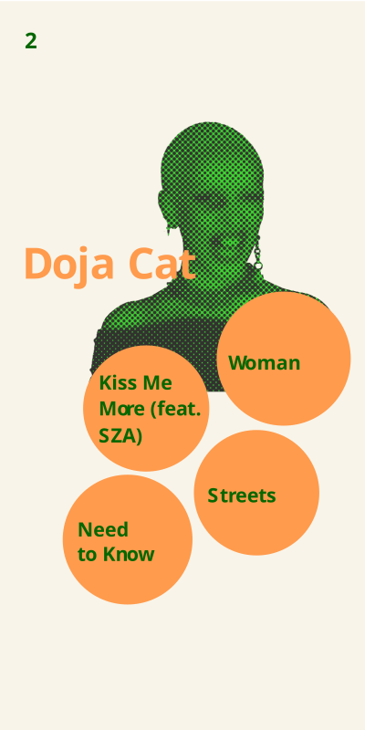
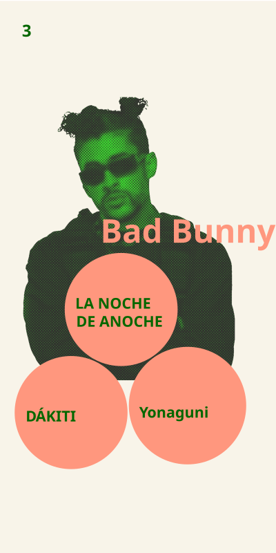
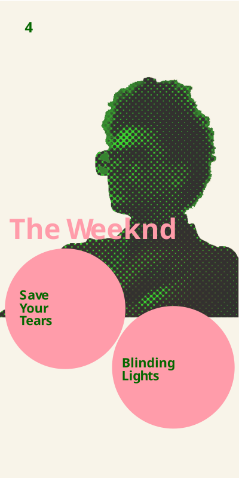
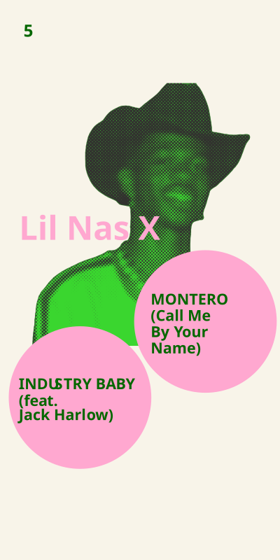
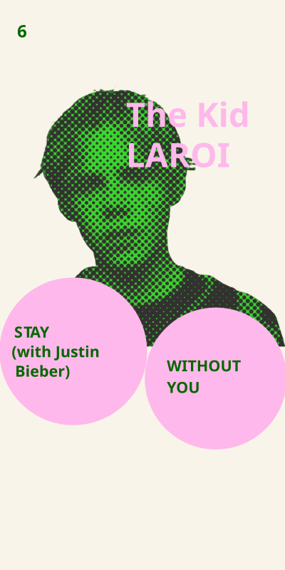
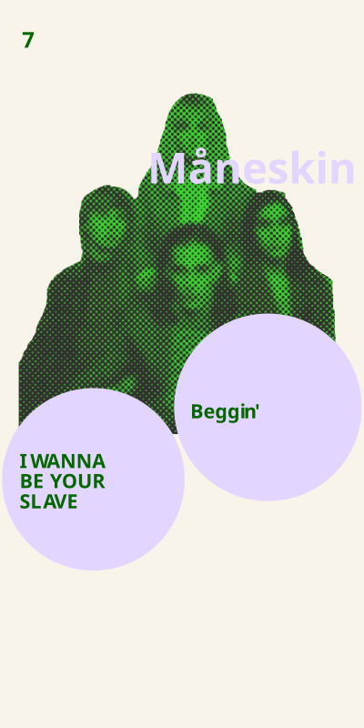
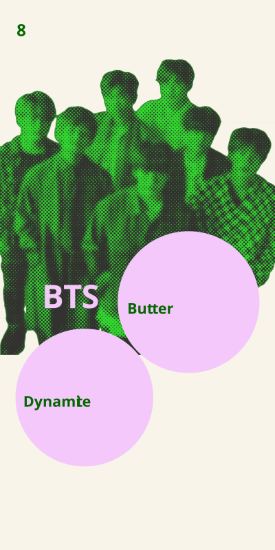
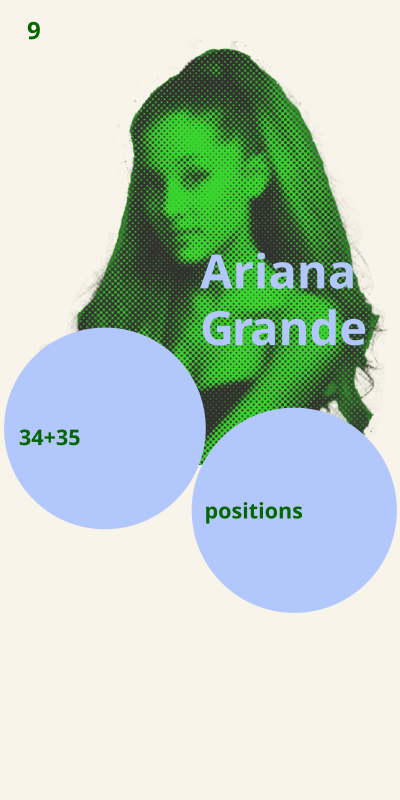

Mapping the Trends: Analyzing the 2021 Top 10 Through Visualization
To analyze the Top 10 songs of 2021, I examined the correlation between the songs' rankings, their popularity, weeks on the chart, and peak positions. This analysis enabled me to construct a network that highlights the most popular artists of 2021.
The visualization reveals a diverse representation of genres, including American pop, K-pop, European alternative pop, and Latin pop, showcasing the variety that dominated the charts in 2021.

